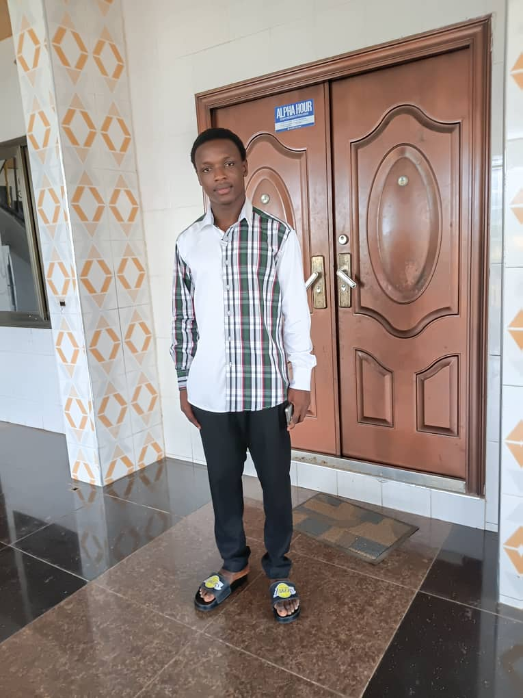
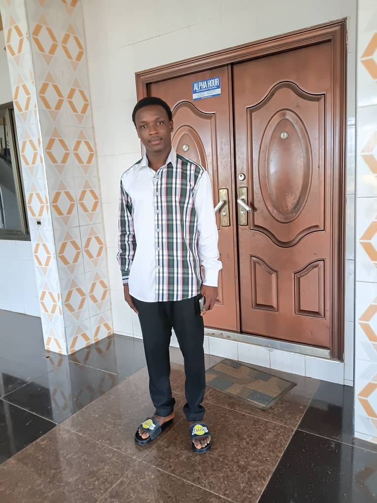

01 — EXPERIENCE
Sports Prefect
My experience as a sports prefect in primary school introduced me to responsibility, cooperation and helping others work toward a common goal.
Ideas matter. Communication gives them power. I am an aspiring Public Relations professional passionate about storytelling, leadership and creating meaningful impact through communication.

I am Apambila Shawn Akolbire, an aspiring Public Relations professional with an interest in how communication shapes perceptions, builds trust and connects people.
My journey is guided by a willingness to learn, a commitment to personal growth and a desire to use communication to make a positive difference. I aim to develop the skills to plan campaigns, tell compelling stories and build strong relationships between organisations and their audiences.
I believe professionalism begins with listening, grows through learning and shows itself through action.
Building the knowledge and practical abilities to become a thoughtful communications professional.
Bachelor in Communication Studies — Public Relations option.
Developing an understanding of media, communication, public relations and professional practice.
The foundation of my academic journey, personal development and interest in leadership.
Leadership starts with responsibility, teamwork and the willingness to contribute.

My experience as a sports prefect in primary school introduced me to responsibility, cooperation and helping others work toward a common goal.
I value listening to different perspectives, being dependable and recognising that good leadership is demonstrated through actions.
I am interested in opportunities that help me grow in public speaking, student engagement, advocacy and responsible leadership.
Areas I am passionate about developing through study, practice and experience.
A space for future campaigns, class assignments and communication projects. These are project directions, not claims of completed client work.
A potential awareness campaign exploring clear messaging, stigma reduction and ways to encourage people to seek reliable support.
Discuss this idea ↗A potential communications concept focused on respectful relationships, public awareness and directing people toward appropriate support.
Discuss this idea ↗Building a portfolio of future press releases, media statements, communication plans and creative campaign materials.
Connect with me ↗My CV will bring together my education, leadership experience, developing skills and future professional opportunities.
Contact me by email to request my current CV or discuss opportunities for learning, collaboration and professional growth.
REQUEST MY CV ↗Interested in communication, student leadership, creative ideas or potential collaboration? I'd be glad to connect and learn from the conversation.